Unit B4: Trigonometric
Functions单元 B4：三角函数
The trigonometry of the function family. B4 covers the unit-circle definitions, the Pythagorean and double-angle identities, transformations of $y = a \sin(b(x - c)) + d$, and the systematic solving of trigonometric equations on a stated interval. The HL extension adds the reciprocal functions ($\sec, \csc, \cot$), the inverse trig functions, and the compound-angle identities.The SL view hides the HL extension (reciprocal, inverse and compound-angle work).本单元聚焦三角函数的函数族视角。B4 涵盖单位圆定义、毕氏与倍角恒等式、$y = a \sin(b(x - c)) + d$ 形式的图像变换，以及在指定区间内系统求解三角方程的方法。HL 拓展加入倒数函数（$\sec, \csc, \cot$）、反三角函数与复角恒等式。SL 视图隐藏 HL 拓展内容（倒数、反三角与复角）。
Unit Circle and Exact Values单位圆与精确值 SL 3.5
- State the unit-circle definitions: $\cos\theta$ is the $x$-coordinate and $\sin\theta$ the $y$-coordinate of the point at angle $\theta$, and $\tan\theta = \frac{\sin\theta}{\cos\theta}$, for any real $\theta$.
- Recall the exact values of $\sin$, $\cos$ and $\tan$ at $0$, $\frac{\pi}{6}$, $\frac{\pi}{4}$, $\frac{\pi}{3}$ and $\frac{\pi}{2}$.
- Identify the quadrant of an angle and calculate its reference angle.
- Deduce the sign of $\sin$, $\cos$ and $\tan$ in each quadrant from the CAST rule.
- Calculate exact values such as $\cos\frac{5\pi}{6}$ or $\tan\frac{7\pi}{6}$ without technology.
- 写出（
state）单位圆定义：对任意实数 $\theta$，$\cos\theta$ 是角 $\theta$ 对应点的 $x$ 坐标，$\sin\theta$ 是其 $y$ 坐标，且 $\tan\theta = \frac{\sin\theta}{\cos\theta}$。 - 默写 $\sin$、$\cos$、$\tan$ 在 $0$、$\frac{\pi}{6}$、$\frac{\pi}{4}$、$\frac{\pi}{3}$、$\frac{\pi}{2}$ 处的精确值（
exact value）。 - 判断（
identify）角所在象限并计算其参考角（reference angle）。 - 由 CAST 规则推断（
deduce）$\sin$、$\cos$、$\tan$ 在各象限的符号。 - 不用技术工具计算（
calculate）$\cos\frac{5\pi}{6}$、$\tan\frac{7\pi}{6}$ 等精确值。
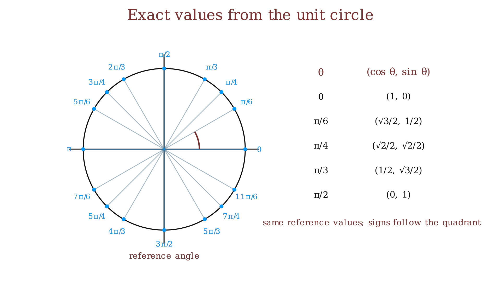
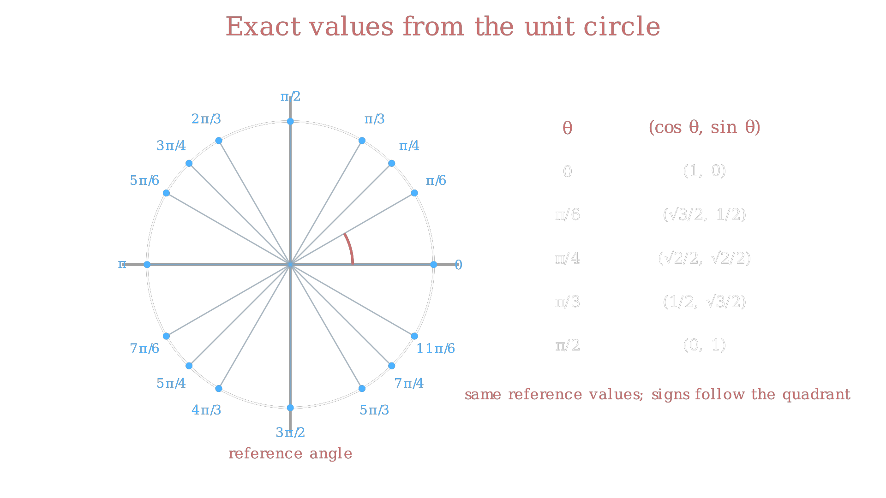
Exact values in the first quadrant.
| $\theta$ | $0$ | $\pi/6$ | $\pi/4$ | $\pi/3$ | $\pi/2$ |
|---|---|---|---|---|---|
| $\sin \theta$ | $0$ | $1/2$ | $\sqrt{2}/2$ | $\sqrt{3}/2$ | $1$ |
| $\cos \theta$ | $1$ | $\sqrt{3}/2$ | $\sqrt{2}/2$ | $1/2$ | $0$ |
| $\tan \theta$ | $0$ | $\sqrt{3}/3$ | $1$ | $\sqrt{3}$ | undef. |
第一象限精确值。
| $\theta$ | $0$ | $\pi/6$ | $\pi/4$ | $\pi/3$ | $\pi/2$ |
|---|---|---|---|---|---|
| $\sin \theta$ | $0$ | $1/2$ | $\sqrt{2}/2$ | $\sqrt{3}/2$ | $1$ |
| $\cos \theta$ | $1$ | $\sqrt{3}/2$ | $\sqrt{2}/2$ | $1/2$ | $0$ |
| $\tan \theta$ | $0$ | $\sqrt{3}/3$ | $1$ | $\sqrt{3}$ | 未定义 |
reference angle）为 $\frac{\pi}{6}$：它的点是 $\frac{\pi}{6}$ 处的点关于 $y$ 轴的对称点，高度同为 $\frac{1}{2}$，$x$ 坐标相反，为 $-\frac{\sqrt{3}}{2}$。Worked Example B4.1: exact value via reference angleB4.1 例题：用参考角求精确值
Find the exact value of $\cos(5\pi/6)$ and $\sin(5\pi/6)$ without a calculator.不使用计算器，求 $\cos(5\pi/6)$ 与 $\sin(5\pi/6)$ 的精确值。
Step 1. Locate the quadrant. $5\pi/6$ lies between $\pi/2$ and $\pi$, so it is in Q2.
第 1 步：定位象限。$5\pi/6$ 介于 $\pi/2$ 与 $\pi$ 之间，故位于 Q2。
Step 2. Reference angle. The acute angle to the $x$-axis is $\pi - 5\pi/6 = \pi/6$.
第 2 步：参考角。与 $x$ 轴所成锐角为 $\pi - 5\pi/6 = \pi/6$。
Step 3. Magnitudes from the first-quadrant table. $\sin(\pi/6) = 1/2$ and $\cos(\pi/6) = \sqrt{3}/2$.
第 3 步：从第一象限表查模长。$\sin(\pi/6) = 1/2$、$\cos(\pi/6) = \sqrt{3}/2$。
Step 4. Signs from CAST. In Q2, $\sin$ is $+$ and $\cos$ is $-$.
第 4 步：用 CAST 定符号。Q2 中 $\sin$ 取 $+$、$\cos$ 取 $-$。
$$ \sin(5\pi/6) \;=\; +\,\tfrac{1}{2}, \qquad \cos(5\pi/6) \;=\; -\,\tfrac{\sqrt{3}}{2}. $$Going deeper: where the exact values come from进阶：精确值的几何来源
The $\pi/4$ values come from an isosceles right triangle with legs $1$ and hypotenuse $\sqrt{2}$. Both legs project onto the unit circle as $\sqrt{2}/2$, so $\sin(\pi/4) = \cos(\pi/4) = \sqrt{2}/2$.
$\pi/4$ 的值源于等腰直角三角形，腰为 $1$，斜边为 $\sqrt{2}$。两腰在单位圆上投影皆为 $\sqrt{2}/2$，故 $\sin(\pi/4) = \cos(\pi/4) = \sqrt{2}/2$。
The $\pi/6$ and $\pi/3$ values come from an equilateral triangle of side $1$. Drop a perpendicular from one vertex to the opposite side; the half-triangle is a right triangle with hypotenuse $1$, short leg $1/2$ (opposite the $\pi/6$ angle) and long leg $\sqrt{3}/2$ (opposite the $\pi/3$ angle). Hence $\sin(\pi/6) = 1/2$, $\cos(\pi/6) = \sqrt{3}/2$, and the $\pi/3$ values are the swap.
$\pi/6$ 与 $\pi/3$ 的值源于边长为 $1$ 的等边三角形。由一顶点向对边作垂线，得到直角三角形：斜边 $1$、短直角边 $1/2$（对 $\pi/6$）、长直角边 $\sqrt{3}/2$（对 $\pi/3$）。故 $\sin(\pi/6) = 1/2$、$\cos(\pi/6) = \sqrt{3}/2$，$\pi/3$ 的值则对调。
Worked Example B4.1b: exact value in Q3B4.1b 例题：Q3 中的精确值
Find the exact value of $\tan(7\pi/6)$.求 $\tan(7\pi/6)$ 的精确值。
Quadrant. $7\pi/6$ is between $\pi$ and $3\pi/2$, so Q3. Reference angle. $7\pi/6 - \pi = \pi/6$.
象限。$7\pi/6$ 介于 $\pi$ 与 $3\pi/2$ 之间，故 Q3。参考角。$7\pi/6 - \pi = \pi/6$。
Sign. In Q3, $\tan$ is positive (CAST). So $\tan(7\pi/6) = +\tan(\pi/6) = \sqrt{3}/3$.
符号。Q3 中 $\tan$ 为正（CAST）。故 $\tan(7\pi/6) = +\tan(\pi/6) = \sqrt{3}/3$。
A question that asks for an exact value wants a fraction or surd such as $-\frac{\sqrt{3}}{2}$, not a decimal like $-0.866$. Write the reference angle and the quadrant sign as two separate steps, so a sign slip is easy to find. Paper 1 is taken without technology, so practise producing the first-quadrant values from the two special triangles in the Going deeper box until it takes seconds.
题目要求精确值（exact value）时，应给出分数或根式，如 $-\frac{\sqrt{3}}{2}$，而不是 $-0.866$ 这样的小数。把参考角与象限符号分成两步写，符号错误一眼可查。Paper 1 不允许使用技术工具，所以要反复练习由进阶框中的两个特殊三角形推出第一象限的值，直到几秒内完成。
1. State the exact values of $\sin\frac{\pi}{3}$, $\cos\frac{\pi}{4}$ and $\tan\frac{\pi}{6}$.1. 写出 $\sin\frac{\pi}{3}$、$\cos\frac{\pi}{4}$、$\tan\frac{\pi}{6}$ 的精确值。
From the first-quadrant table: $\sin\frac{\pi}{3} = \frac{\sqrt{3}}{2}$, $\cos\frac{\pi}{4} = \frac{\sqrt{2}}{2}$ and $\tan\frac{\pi}{6} = \frac{\sqrt{3}}{3}$ (the same as $\frac{1}{\sqrt{3}}$).
由第一象限表：$\sin\frac{\pi}{3} = \frac{\sqrt{3}}{2}$，$\cos\frac{\pi}{4} = \frac{\sqrt{2}}{2}$，$\tan\frac{\pi}{6} = \frac{\sqrt{3}}{3}$（即 $\frac{1}{\sqrt{3}}$）。
2. Find the exact value of $\cos\frac{4\pi}{3}$.2. 求 $\cos\frac{4\pi}{3}$ 的精确值。
$\frac{4\pi}{3}$ lies between $\pi$ and $\frac{3\pi}{2}$, so it is in Q3. The reference angle is $\frac{4\pi}{3} - \pi = \frac{\pi}{3}$ and $\cos\frac{\pi}{3} = \frac{1}{2}$. Cosine is negative in Q3, so $\cos\frac{4\pi}{3} = -\frac{1}{2}$.
$\frac{4\pi}{3}$ 介于 $\pi$ 与 $\frac{3\pi}{2}$ 之间，位于 Q3。参考角为 $\frac{4\pi}{3} - \pi = \frac{\pi}{3}$，且 $\cos\frac{\pi}{3} = \frac{1}{2}$。余弦在 Q3 为负，故 $\cos\frac{4\pi}{3} = -\frac{1}{2}$。
3. The angle $\theta$ satisfies $0 \le \theta < 2\pi$, lies in Q4 and has $\cos\theta = \frac{1}{2}$. Find $\theta$ and $\sin\theta$ exactly.3. 角 $\theta$ 满足 $0 \le \theta < 2\pi$，位于 Q4，且 $\cos\theta = \frac{1}{2}$。精确求 $\theta$ 与 $\sin\theta$。
The reference angle is $\frac{\pi}{3}$, because $\cos\frac{\pi}{3} = \frac{1}{2}$. The Q4 angle with this reference angle is $\theta = 2\pi - \frac{\pi}{3} = \frac{5\pi}{3}$. Sine is negative in Q4, so $\sin\theta = -\sin\frac{\pi}{3} = -\frac{\sqrt{3}}{2}$.
参考角为 $\frac{\pi}{3}$，因为 $\cos\frac{\pi}{3} = \frac{1}{2}$。Q4 中具有该参考角的角为 $\theta = 2\pi - \frac{\pi}{3} = \frac{5\pi}{3}$。正弦在 Q4 为负，故 $\sin\theta = -\sin\frac{\pi}{3} = -\frac{\sqrt{3}}{2}$。
Pythagorean and Double-Angle Identities毕氏与倍角恒等式 SL 3.6
- State the Pythagorean identity $\sin^{2}x + \cos^{2}x = 1$ and explain why it holds for every angle.
- Use the identity to find $\cos\theta$ from $\sin\theta$ (or the reverse), choosing the sign from the quadrant.
- State the double-angle formulas $\sin 2x = 2\sin x\cos x$ and $\cos 2x = \cos^{2}x - \sin^{2}x = 2\cos^{2}x - 1 = 1 - 2\sin^{2}x$.
- Choose the form of $\cos 2x$ that uses the ratio you are given.
- Calculate exact values of $\sin 2\theta$ and $\cos 2\theta$ from one ratio and a quadrant.
- Show that a simple identity holds by rewriting one side with these formulas.
- 写出毕氏恒等式（
Pythagorean identity）$\sin^{2}x + \cos^{2}x = 1$，并解释（explain）它为何对所有角成立。 - 用该恒等式由 $\sin\theta$ 求 $\cos\theta$（或反过来），并按象限确定符号。
- 写出倍角公式（
double-angle formulas）$\sin 2x = 2\sin x\cos x$ 与 $\cos 2x = \cos^{2}x - \sin^{2}x = 2\cos^{2}x - 1 = 1 - 2\sin^{2}x$。 - 按题目所给的比值选用 $\cos 2x$ 的形式。
- 由一个比值与所在象限计算（
calculate）$\sin 2\theta$ 与 $\cos 2\theta$ 的精确值。 - 用这些公式改写一边，证明（
show that）简单的恒等式。
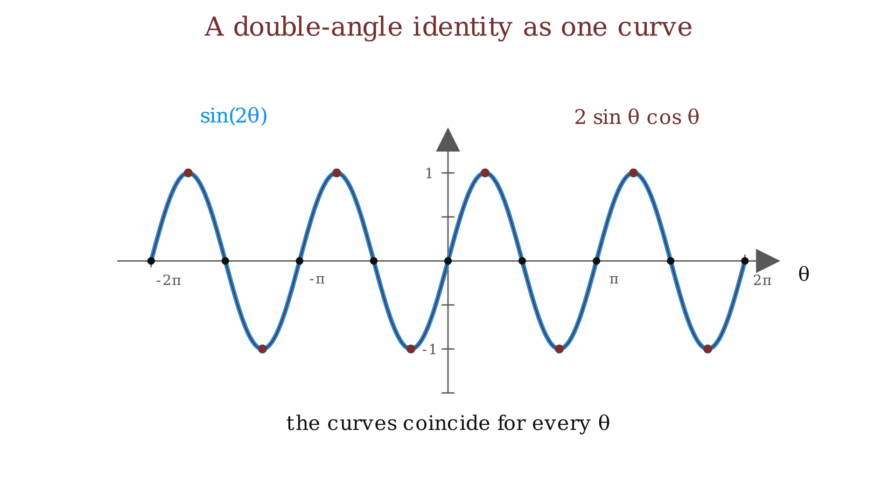
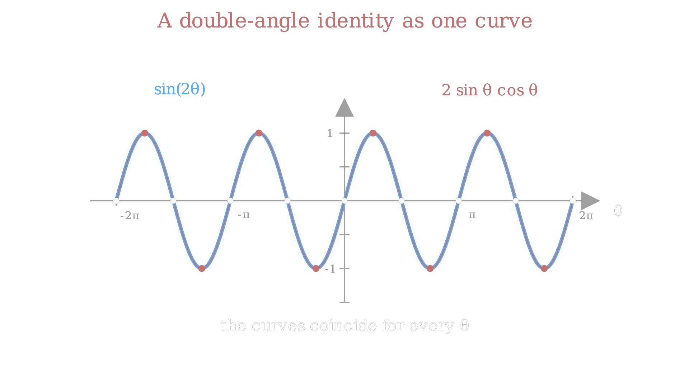
Worked Example B4.2: derive companion identities (HL)B4.2 例题：推导伴随恒等式（HL）
Given $\sin^{2} x + \cos^{2} x = 1$, derive $1 + \tan^{2} x = \sec^{2} x$ and state the domain on which the derivation is valid.由 $\sin^{2} x + \cos^{2} x = 1$ 推导 $1 + \tan^{2} x = \sec^{2} x$，并写出推导成立的定义域。
Divide both sides by $\cos^{2} x$.
两边除以 $\cos^{2} x$。
$$ \frac{\sin^{2} x}{\cos^{2} x} + \frac{\cos^{2} x}{\cos^{2} x} \;=\; \frac{1}{\cos^{2} x}. $$Recognise each ratio. $\sin x / \cos x = \tan x$ and $1/\cos x = \sec x$, so
识别各比值。$\sin x / \cos x = \tan x$，$1/\cos x = \sec x$，故
$$ \tan^{2} x + 1 \;=\; \sec^{2} x. $$Domain. Division by $\cos^{2} x$ requires $\cos x \ne 0$, that is $x \ne \pi/2 + k \pi$ for integer $k$. On this set the identity holds. (The companion $1 + \cot^{2} x = \csc^{2} x$ requires $\sin x \ne 0$, that is $x \ne k \pi$.)
定义域。除以 $\cos^{2} x$ 要求 $\cos x \ne 0$，即 $x \ne \pi/2 + k \pi$（$k$ 为整数）。在该集合上恒等式成立。（伴随式 $1 + \cot^{2} x = \csc^{2} x$ 要求 $\sin x \ne 0$，即 $x \ne k \pi$。）
Worked Example B4.2b: apply the double-angle formulaB4.2b 例题：应用倍角公式
Given $\sin \theta = 3/5$ with $\theta$ in Q2, find $\sin 2\theta$ and $\cos 2\theta$ exactly.已知 $\sin \theta = 3/5$，且 $\theta$ 位于 Q2，精确求 $\sin 2\theta$ 与 $\cos 2\theta$。
Find $\cos \theta$. Pythagoras: $\cos^{2} \theta = 1 - 9/25 = 16/25$, so $\cos \theta = \pm 4/5$. In Q2 $\cos$ is negative, hence $\cos \theta = -4/5$.
求 $\cos \theta$。毕氏：$\cos^{2} \theta = 1 - 9/25 = 16/25$，故 $\cos \theta = \pm 4/5$。Q2 中 $\cos$ 为负，得 $\cos \theta = -4/5$。
Apply the double-angle formulas.
套用倍角公式。
$$ \sin 2\theta \;=\; 2 \sin \theta \cos \theta \;=\; 2 \cdot \tfrac{3}{5} \cdot \bigl(-\tfrac{4}{5}\bigr) \;=\; -\tfrac{24}{25}. $$ $$ \cos 2\theta \;=\; 1 - 2 \sin^{2} \theta \;=\; 1 - 2 \cdot \tfrac{9}{25} \;=\; 1 - \tfrac{18}{25} \;=\; \tfrac{7}{25}. $$Check the quadrant of $2\theta$. Since $\sin 2\theta < 0$ and $\cos 2\theta > 0$, the angle $2\theta$ lies in Q4. (This is consistent: $\sin\theta = 3/5 < \sin(3\pi/4) = \sqrt{2}/2$ with $\theta$ in Q2 puts $\theta$ in $(3\pi/4, \pi)$, so $2\theta \in (3\pi/2, 2\pi)$, which is Q4.)
检验 $2\theta$ 所在象限。$\sin 2\theta < 0$、$\cos 2\theta > 0$，故 $2\theta$ 位于 Q4。（这是一致的：$\sin\theta = 3/5 < \sin(3\pi/4) = \sqrt{2}/2$ 且 $\theta$ 在 Q2，故 $\theta$ 在 $(3\pi/4, \pi)$ 内，从而 $2\theta \in (3\pi/2, 2\pi)$，即 Q4。）
Worked Example B4.2c: find all ratios from oneB4.2c 例题：由一个比值求全部三个
Given $\tan x = 5/12$ with $x$ in Q3, find $\sin x$ and $\cos x$ exactly.已知 $\tan x = 5/12$，$x$ 位于 Q3，精确求 $\sin x$ 与 $\cos x$。
Build a reference triangle. $\tan x = 5/12$ suggests opposite $=5$, adjacent $=12$, hypotenuse $=\sqrt{5^2+12^2}=13$.
构造参考三角形。$\tan x = 5/12$，取对边 $=5$、邻边 $=12$、斜边 $=\sqrt{5^2+12^2}=13$。
Attach Q3 signs. In Q3 both $\sin$ and $\cos$ are negative.
加上 Q3 符号。Q3 中 $\sin$、$\cos$ 均为负。
$$ \sin x = -\tfrac{5}{13}, \qquad \cos x = -\tfrac{12}{13}. $$When a question gives $\sin\theta$ and a quadrant, the quadrant is there to fix the sign of $\cos\theta$: for $\sin\theta = \frac{3}{5}$ write $\cos\theta = \pm\frac{4}{5}$ first, then choose the sign and say which quadrant decided it. For $\cos 2\theta$ pick the form that uses the ratio you were given ($1 - 2\sin^{2}\theta$ from $\sin\theta$, $2\cos^{2}\theta - 1$ from $\cos\theta$), which saves a step. In a "show that" question start from one side and finish at the other; working on both sides at once does not show the result.
题目给出 $\sin\theta$ 与象限时，象限的作用是确定 $\cos\theta$ 的符号：例如 $\sin\theta = \frac{3}{5}$ 时先写 $\cos\theta = \pm\frac{4}{5}$，再选符号并说明由哪个象限决定。求 $\cos 2\theta$ 时，选用含已知比值的形式（已知 $\sin\theta$ 用 $1 - 2\sin^{2}\theta$，已知 $\cos\theta$ 用 $2\cos^{2}\theta - 1$），可省一步。“show that”题要从一边出发推到另一边；两边同时变形并不能证明结论。
1. Explain why $\sin^{2}\theta + \cos^{2}\theta = 1$ for every angle $\theta$.1. 解释为什么对任意角 $\theta$ 都有 $\sin^{2}\theta + \cos^{2}\theta = 1$。
The point at angle $\theta$ on the unit circle is $(\cos\theta, \sin\theta)$. Every point on the unit circle is at distance $1$ from the origin, so by Pythagoras its coordinates satisfy $x^{2} + y^{2} = 1$. Substituting $x = \cos\theta$ and $y = \sin\theta$ gives $\cos^{2}\theta + \sin^{2}\theta = 1$.
单位圆上角 $\theta$ 对应的点为 $(\cos\theta, \sin\theta)$。单位圆上每个点到原点的距离都是 $1$，由勾股定理其坐标满足 $x^{2} + y^{2} = 1$。代入 $x = \cos\theta$、$y = \sin\theta$ 得 $\cos^{2}\theta + \sin^{2}\theta = 1$。
2. Given $\sin x = \frac{1}{3}$, find the exact value of $\cos 2x$.2. 已知 $\sin x = \frac{1}{3}$，求 $\cos 2x$ 的精确值。
Use the form with $\sin x$: $\cos 2x = 1 - 2\sin^{2}x = 1 - 2 \cdot \frac{1}{9} = 1 - \frac{2}{9} = \frac{7}{9}$. No quadrant is needed, because $\sin^{2}x$ does not depend on the sign of $\cos x$.
用含 $\sin x$ 的形式：$\cos 2x = 1 - 2\sin^{2}x = 1 - 2 \cdot \frac{1}{9} = 1 - \frac{2}{9} = \frac{7}{9}$。这里无需知道象限，因为 $\sin^{2}x$ 与 $\cos x$ 的符号无关。
3. Given $\cos\theta = -\frac{5}{13}$ with $\theta$ in Q3, find $\sin\theta$ and $\sin 2\theta$ exactly.3. 已知 $\cos\theta = -\frac{5}{13}$ 且 $\theta$ 位于 Q3，精确求 $\sin\theta$ 与 $\sin 2\theta$。
$\sin^{2}\theta = 1 - \frac{25}{169} = \frac{144}{169}$, so $\sin\theta = \pm\frac{12}{13}$. Sine is negative in Q3, so $\sin\theta = -\frac{12}{13}$. Then $\sin 2\theta = 2\sin\theta\cos\theta = 2 \cdot \bigl(-\frac{12}{13}\bigr) \cdot \bigl(-\frac{5}{13}\bigr) = \frac{120}{169}$.
$\sin^{2}\theta = 1 - \frac{25}{169} = \frac{144}{169}$，故 $\sin\theta = \pm\frac{12}{13}$。正弦在 Q3 为负，所以 $\sin\theta = -\frac{12}{13}$。于是 $\sin 2\theta = 2\sin\theta\cos\theta = 2 \cdot \bigl(-\frac{12}{13}\bigr) \cdot \bigl(-\frac{5}{13}\bigr) = \frac{120}{169}$。
4. Show that $(\sin x + \cos x)^{2} = 1 + \sin 2x$.4. 证明 $(\sin x + \cos x)^{2} = 1 + \sin 2x$。
Start from the left side and expand: $(\sin x + \cos x)^{2} = \sin^{2}x + 2\sin x\cos x + \cos^{2}x$. Group the squares: $(\sin^{2}x + \cos^{2}x) + 2\sin x\cos x = 1 + \sin 2x$, using the Pythagorean identity and then the double-angle formula. This is the right side.
从左边出发展开：$(\sin x + \cos x)^{2} = \sin^{2}x + 2\sin x\cos x + \cos^{2}x$。把平方项合并：$(\sin^{2}x + \cos^{2}x) + 2\sin x\cos x = 1 + \sin 2x$，依次用了毕氏恒等式与倍角公式。这正是右边。
Circular Functions and Transformations三角函数与图像变换 SL 3.7
- Identify the amplitude $|a|$, the period $\frac{2\pi}{|b|}$, the horizontal shift $c$ and the midline (principal axis) $y = d$ of $y = a\sin\bigl(b(x - c)\bigr) + d$.
- Calculate the maximum $d + |a|$ and the minimum $d - |a|$ of a transformed sine or cosine curve.
- Factorise $b$ out of the argument before reading a horizontal shift.
- Determine the equation of a sine or cosine curve from its amplitude, period, shift and midline.
- Sketch one cycle of a transformed sine curve, marking the midline, a maximum and a minimum.
- Sketch $y = \tan x$, stating its period $\pi$ and its vertical asymptotes.
- 辨识（
identify）$y = a\sin\bigl(b(x - c)\bigr) + d$ 的振幅（amplitude）$|a|$、周期（period）$\frac{2\pi}{|b|}$、水平平移 $c$ 与中线（principal axis）$y = d$。 - 计算（
calculate）变换后正弦或余弦曲线的最大值 $d + |a|$ 与最小值 $d - |a|$。 - 读水平平移之前，先把 $b$ 从自变量部分提出。
- 由振幅、周期、平移与中线确定（
determine）正弦或余弦曲线的方程。 - 画出（
sketch）变换后正弦曲线的一个周期，标出中线、一个最大值点与一个最小值点。 - 画出 $y = \tan x$，并写出其周期 $\pi$ 与垂直渐近线。
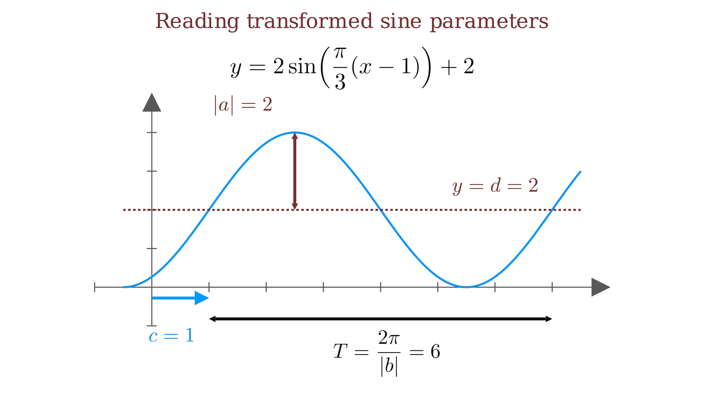
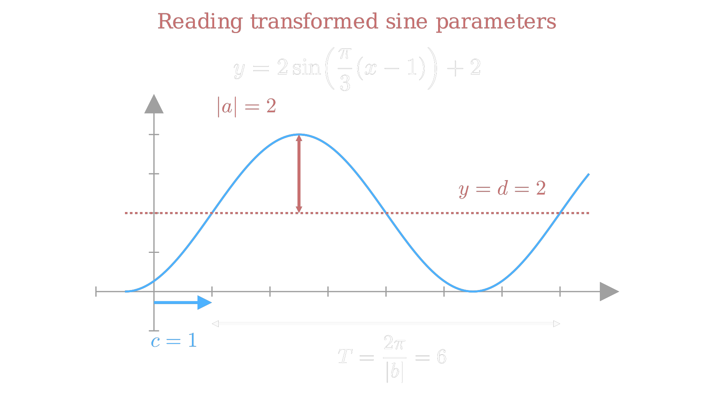
- Amplitude $= |a|$. Half the peak-to-trough distance. The graph oscillates between $d - |a|$ and $d + |a|$.
- Period $= 2\pi / |b|$. The horizontal length of one full cycle.
- Phase shift $= c$. The horizontal translation; the basic sine wave $y = \sin x$ is shifted to the right by $c$ when $c > 0$.
- Vertical shift $= d$. The midline of the wave; the graph oscillates about $y = d$.
The tangent function. $y = \tan x$ has period $\pi$ (not $2\pi$) and vertical asymptotes at $x = \pi/2 + k\pi$, where $\cos x = 0$. It is unbounded between consecutive asymptotes, so it has no amplitude.
- 振幅（amplitude）$= |a|$。峰谷距离的一半。图像在 $d - |a|$ 与 $d + |a|$ 之间振荡。
- 周期（period）$= 2\pi / |b|$。一个完整周期的水平长度。
- 相移（phase shift）$= c$。水平平移；$c > 0$ 时，基本正弦 $y = \sin x$ 向右平移 $c$。
- 纵移（vertical shift）$= d$。波的中线；图像绕 $y = d$ 振荡。
正切函数。$y = \tan x$ 周期为 $\pi$（非 $2\pi$），垂直渐近线位于 $x = \pi/2 + k\pi$（即 $\cos x = 0$ 处）。在两相邻渐近线之间无界，故无振幅。
midline）为 $y = d = 3$。振幅 $|a| = 2$ 是中线到最大值（$5$）或最小值（$1$）的距离。周期 $\frac{2\pi}{|b|} = \pi$ 是 $x = \frac{\pi}{2}$ 与 $x = \frac{3\pi}{2}$ 两个最大值之间的距离。平移量 $c = \frac{\pi}{4}$ 把正弦周期的起点（在中线上、向上穿过）从 $x = 0$ 移到 $x = \frac{\pi}{4}$。横纵坐标比例不同。Worked Example B4.3: identify transformations from an equationB4.3 例题：由方程辨识变换
For the curve $y = 3 \sin\bigl(2(x - \pi/4)\bigr) + 1$, state the amplitude, period, phase shift, vertical shift, and the maximum and minimum values.对曲线 $y = 3 \sin\bigl(2(x - \pi/4)\bigr) + 1$，写出振幅、周期、相移、纵移以及最大值与最小值。
Read the parameters. Here $a = 3$, $b = 2$, $c = \pi/4$, $d = 1$.
读出参数。$a = 3$、$b = 2$、$c = \pi/4$、$d = 1$。
- Amplitude. $|a| = 3$.
- 振幅。$|a| = 3$。
- Period. $2\pi / |b| = 2\pi / 2 = \pi$.
- 周期。$2\pi / |b| = 2\pi / 2 = \pi$。
- Phase shift. $c = \pi/4$ (rightward).
- 相移。$c = \pi/4$（向右）。
- Vertical shift. $d = 1$ (upward).
- 纵移。$d = 1$（向上）。
- Maximum. $d + |a| = 1 + 3 = 4$.
- 最大值。$d + |a| = 1 + 3 = 4$。
- Minimum. $d - |a| = 1 - 3 = -2$.
- 最小值。$d - |a| = 1 - 3 = -2$。
Worked Example B4.3b: write the equation from a descriptionB4.3b 例题：由描述写出方程
A wave has amplitude $2$, period $\pi$, no phase shift, and oscillates about $y=-1$. Write its equation as a cosine function.某波振幅 $2$、周期 $\pi$、无相移，绕 $y=-1$ 振荡。写出其余弦函数方程。
Read off directly. $a=2$ (amplitude), $d=-1$ (midline). Period $=2\pi/b=\pi \Rightarrow b=2$. No phase shift $\Rightarrow c=0$.
直接读出。$a=2$（振幅），$d=-1$（中线）。周期 $=2\pi/b=\pi \Rightarrow b=2$。无相移 $\Rightarrow c=0$。
$$ y = 2\cos(2x) - 1 $$This reverses Worked Example B4.3: it goes from the features of the graph to the equation, instead of from the equation to the features. Check: at $x = 0$, $y = 2\cos 0 - 1 = 1 = d + |a|$, a maximum, as a cosine with no shift should give.
这与例题 B4.3 方向相反：由图像特征写出方程，而不是由方程读出特征。检验：$x = 0$ 时 $y = 2\cos 0 - 1 = 1 = d + |a|$，是最大值，符合不平移的余弦曲线。
Factorise the argument before you read the shift: $\sin\bigl(2x - \frac{\pi}{2}\bigr) = \sin\bigl(2(x - \frac{\pi}{4})\bigr)$ has shift $\frac{\pi}{4}$, not $\frac{\pi}{2}$. On a sketch, mark the midline, one maximum and one minimum with their coordinates, and end the curve at the edges of the stated domain. Check an equation you have written by substituting one point you know, for example the value at $x = 0$.
读平移量之前先提取因式：$\sin\bigl(2x - \frac{\pi}{2}\bigr) = \sin\bigl(2(x - \frac{\pi}{4})\bigr)$ 的平移量是 $\frac{\pi}{4}$，不是 $\frac{\pi}{2}$。画草图（sketch）时，标出中线以及一个最大值点、一个最小值点的坐标，并让曲线止于题目给定定义域的端点。写出方程后，代入一个已知点检验，例如 $x = 0$ 处的值。
1. State the amplitude, the period and the midline of $y = 5\cos(4x) - 2$, and its range.1. 写出 $y = 5\cos(4x) - 2$ 的振幅、周期、中线及值域。
Amplitude $|a| = 5$. Period $\frac{2\pi}{4} = \frac{\pi}{2}$. Midline $y = -2$. The curve runs from $-2 - 5 = -7$ to $-2 + 5 = 3$, so the range is $-7 \le y \le 3$.
振幅 $|a| = 5$。周期 $\frac{2\pi}{4} = \frac{\pi}{2}$。中线 $y = -2$。曲线取值从 $-2 - 5 = -7$ 到 $-2 + 5 = 3$，值域为 $-7 \le y \le 3$。
2. Find the horizontal shift of $y = \sin(3x + \pi)$ relative to $y = \sin 3x$.2. 求 $y = \sin(3x + \pi)$ 相对于 $y = \sin 3x$ 的水平平移。
Factorise: $3x + \pi = 3\bigl(x + \frac{\pi}{3}\bigr)$, so $c = -\frac{\pi}{3}$ and the curve $y = \sin 3x$ is shifted $\frac{\pi}{3}$ to the left. Reading the shift as $\pi$ forgets to divide by $b = 3$.
提取因式：$3x + \pi = 3\bigl(x + \frac{\pi}{3}\bigr)$，故 $c = -\frac{\pi}{3}$，曲线 $y = \sin 3x$ 向左平移 $\frac{\pi}{3}$。把平移量读成 $\pi$ 是忘了除以 $b = 3$。
3. A curve $y = a\sin(bx) + d$ with $a > 0$ and $b > 0$ has maximum $7$, minimum $1$ and period $4\pi$. Find $a$, $b$ and $d$.3. 曲线 $y = a\sin(bx) + d$（$a > 0$，$b > 0$）的最大值为 $7$，最小值为 $1$，周期为 $4\pi$。求 $a$、$b$、$d$。
The midline is halfway between the extremes: $d = \frac{7 + 1}{2} = 4$. The amplitude is half the distance between them: $a = \frac{7 - 1}{2} = 3$. From the period, $\frac{2\pi}{b} = 4\pi$, so $b = \frac{1}{2}$. The curve is $y = 3\sin\bigl(\frac{x}{2}\bigr) + 4$.
中线位于最大值与最小值正中：$d = \frac{7 + 1}{2} = 4$。振幅是两者距离的一半：$a = \frac{7 - 1}{2} = 3$。由周期 $\frac{2\pi}{b} = 4\pi$ 得 $b = \frac{1}{2}$。曲线为 $y = 3\sin\bigl(\frac{x}{2}\bigr) + 4$。
4. Use Figure 2: write the equation of a curve with the same amplitude and period that oscillates about $y = -1$ and has its maximum at $x = 0$, as a cosine function.4. 利用图 2：写出一条余弦曲线的方程，其振幅与周期与图 2 相同，绕 $y = -1$ 振荡，并在 $x = 0$ 处取最大值。
From Figure 2 the amplitude is $2$ and the period is $\pi$, so $a = 2$ and $b = \frac{2\pi}{\pi} = 2$. A cosine curve with no shift has a maximum at $x = 0$, so $c = 0$, and $d = -1$. The curve is $y = 2\cos(2x) - 1$. Check: at $x = 0$, $y = 2 - 1 = 1 = d + |a|$, the maximum.
由图 2 读出振幅 $2$、周期 $\pi$，故 $a = 2$，$b = \frac{2\pi}{\pi} = 2$。不平移的余弦曲线在 $x = 0$ 处取最大值，故 $c = 0$，且 $d = -1$。曲线为 $y = 2\cos(2x) - 1$。检验：$x = 0$ 时 $y = 2 - 1 = 1 = d + |a|$，正是最大值。
Solving Trigonometric Equations求解三角方程 SL 3.8
- Solve $\sin x = c$, $\cos x = c$ and $\tan x = c$ on a given interval, finding every solution.
- Find the second solution in a cycle from the symmetry of the graph: $\pi - \alpha$ for sine, $2\pi - \alpha$ for cosine, $\alpha + \pi$ for tangent.
- Solve equations such as $\cos 2x = c$ by changing the interval for $2x$ first.
- Solve equations that are quadratic in $\sin x$ or $\cos x$ by substitution and factorising.
- Write the general solution by adding integer multiples of the period.
- 在给定区间内解 $\sin x = c$、$\cos x = c$、$\tan x = c$，求出（
find）全部解。 - 利用图像对称性求一个周期内的第二解：正弦用 $\pi - \alpha$，余弦用 $2\pi - \alpha$，正切用 $\alpha + \pi$。
- 解 $\cos 2x = c$ 这类方程时，先变换 $2x$ 的区间。
- 用代换与因式分解解关于 $\sin x$ 或 $\cos x$ 的二次方程（
quadratic in）。 - 加上周期的整数倍，写出通解（
general solution）。
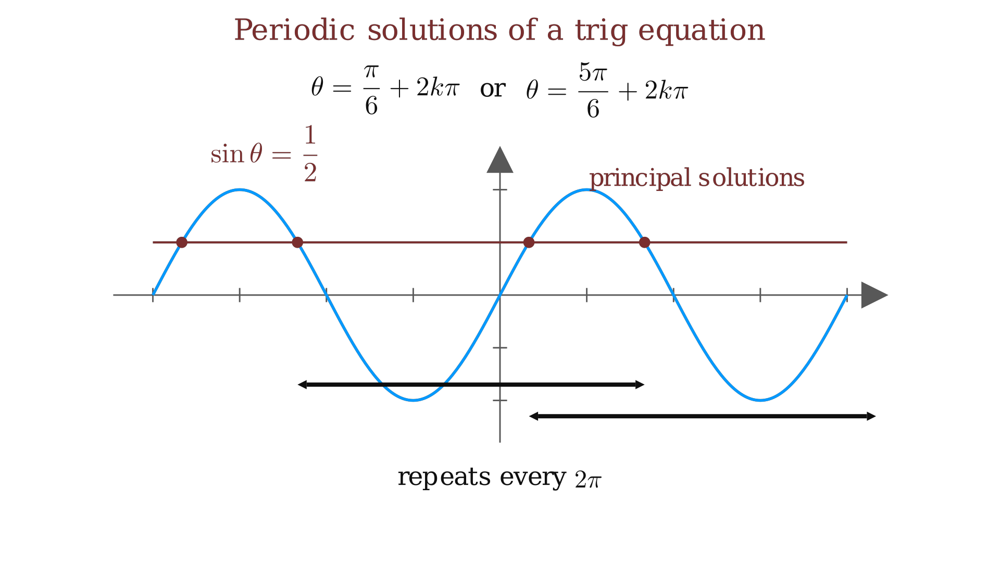
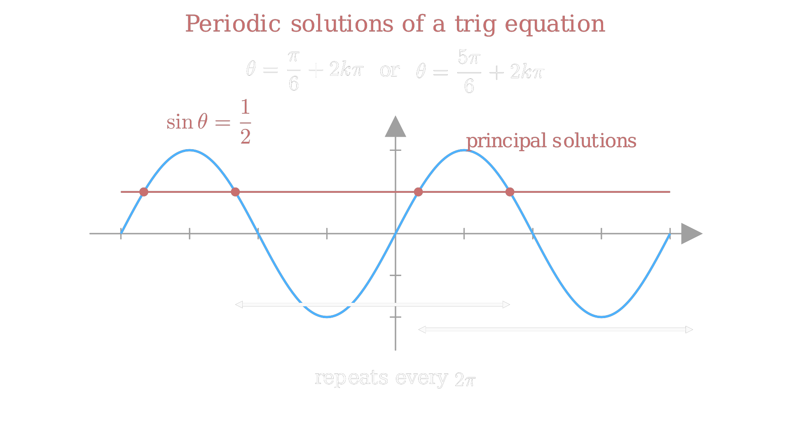
- $\sin x = c$: solutions are $x = \alpha$ and $x = \pi - \alpha$. (One in Q1 or Q4, one in Q2 or Q3.) For $c = 0$ the closed interval $[0, 2\pi]$ also contains the endpoint $x = 2\pi$, a third solution (the same happens for $\tan x = 0$).
- $\cos x = c$: solutions are $x = \alpha$ and $x = 2\pi - \alpha$. (One in Q1 or Q2, one in Q3 or Q4.)
- $\tan x = c$: solutions are $x = \alpha$ and $x = \alpha + \pi$. ($\tan$ has period $\pi$, so the second solution is just one period away.)
General solutions on $\mathbb{R}$. Add $2 k \pi$ (for $\sin$ or $\cos$) or $k \pi$ (for $\tan$) to each base solution, where $k$ is any integer.
Always check the stated interval. The number of solutions depends on how many cycles of the trig function fit inside the interval given.
principal value），即计算器给出的角。
- $\sin x = c$：解为 $x = \alpha$ 与 $x = \pi - \alpha$。（分别在 Q1 或 Q4、Q2 或 Q3。）当 $c = 0$ 时，闭区间 $[0, 2\pi]$ 还包含端点 $x = 2\pi$，这是第三个解（$\tan x = 0$ 同理）。
- $\cos x = c$：解为 $x = \alpha$ 与 $x = 2\pi - \alpha$。（分别在 Q1 或 Q2、Q3 或 Q4。）
- $\tan x = c$：解为 $x = \alpha$ 与 $x = \alpha + \pi$。（$\tan$ 周期为 $\pi$，故第二解只差一个周期。）
$\mathbb{R}$ 上的通解。各基础解再加 $2 k \pi$（$\sin$ 或 $\cos$）或 $k \pi$（$\tan$），$k$ 为任意整数。
始终校对给定区间。解的个数取决于该区间能容纳几个周期。
Worked Example B4.4: canonical sine equationB4.4 例题：标准正弦方程
Solve $2 \sin x = \sqrt{3}$ on $[0, 2\pi]$.在 $[0, 2\pi]$ 上解 $2 \sin x = \sqrt{3}$。
Isolate $\sin x$. $\sin x = \sqrt{3} / 2$.
分离 $\sin x$。$\sin x = \sqrt{3} / 2$。
Principal solution. From the first-quadrant table, $\sin(\pi/3) = \sqrt{3}/2$, so $\alpha = \pi/3$.
主值。由第一象限表，$\sin(\pi/3) = \sqrt{3}/2$，故 $\alpha = \pi/3$。
Second solution. $\pi - \alpha = \pi - \pi/3 = 2\pi/3$.
第二解。$\pi - \alpha = \pi - \pi/3 = 2\pi/3$。
Check the interval. Both $\pi/3$ and $2\pi/3$ lie in $[0, 2\pi]$. The next solutions, $\pi/3 + 2\pi$ and $2\pi/3 + 2\pi$, lie outside $[0, 2\pi]$, so there are no others.
校对区间。$\pi/3$ 与 $2\pi/3$ 均在 $[0, 2\pi]$ 内。下一组解 $\pi/3 + 2\pi$ 与 $2\pi/3 + 2\pi$ 在 $[0, 2\pi]$ 之外，所以没有其他解。
$$ x \;=\; \tfrac{\pi}{3} \quad \text{or} \quad x \;=\; \tfrac{2\pi}{3}. $$Going deeper: equations after substitution进阶：代换后的方程
For an equation such as $2 \sin^{2} x - \sin x - 1 = 0$, substitute $u = \sin x$ to convert to a quadratic in $u$: $2 u^{2} - u - 1 = 0$. Factor: $(2 u + 1)(u - 1) = 0$, so $u = -1/2$ or $u = 1$.
如方程 $2 \sin^{2} x - \sin x - 1 = 0$，代 $u = \sin x$ 转化为 $u$ 的二次方程：$2 u^{2} - u - 1 = 0$。因式分解：$(2 u + 1)(u - 1) = 0$，故 $u = -1/2$ 或 $u = 1$。
Then solve $\sin x = -1/2$ and $\sin x = 1$ separately by the standard procedure. The $\sin x = 1$ case has the single solution $x = \pi/2$ on $[0, 2\pi]$; $\sin x = -1/2$ has $x = 7\pi/6$ and $x = 11\pi/6$.
再分别用标准流程解 $\sin x = -1/2$ 与 $\sin x = 1$。$\sin x = 1$ 在 $[0, 2\pi]$ 上只有 $x = \pi/2$；$\sin x = -1/2$ 给出 $x = 7\pi/6$ 与 $x = 11\pi/6$。
Worked Example B4.4b: general solution, not restricted to an intervalB4.4b 例题：通解，非限定区间
Find the general solution of $\tan x = 1$ on $\mathbb{R}$.求 $\tan x = 1$ 在 $\mathbb{R}$ 上的通解。
Principal value. $\alpha = \tan^{-1}(1) = \pi/4$.
主值。$\alpha = \tan^{-1}(1) = \pi/4$。
Add multiples of the period. $\tan$ has period $\pi$, so every solution is $\pi/4$ plus an integer multiple of $\pi$. Unlike $\sin$ and $\cos$, there is no separate "second base solution" to find.
加上周期的整数倍。$\tan$ 周期为 $\pi$，故每个解都是 $\pi/4$ 加上 $\pi$ 的整数倍。与 $\sin$、$\cos$ 不同，这里不需要再找"第二个基础解"。
$$ x = \frac{\pi}{4} + k\pi, \quad k \in \mathbb{Z}. $$Worked Example B4.4c: an equation with a multiple angleB4.4c 例题：含倍角的方程
Solve $2\cos 2x = 1$ for $0 \le x \le 2\pi$.在 $0 \le x \le 2\pi$ 上解 $2\cos 2x = 1$。
Step 1. Isolate the cosine. $\cos 2x = \frac{1}{2}$.
第 1 步：分离余弦。$\cos 2x = \frac{1}{2}$。
Step 2. Change the interval. Let $u = 2x$. Since $0 \le x \le 2\pi$, the new variable runs over $0 \le u \le 4\pi$: two full cycles of cosine.
第 2 步：变换区间。令 $u = 2x$。由 $0 \le x \le 2\pi$，新变量的范围是 $0 \le u \le 4\pi$，即余弦的两个完整周期。
Step 3. Solve for $u$. The principal value is $\frac{\pi}{3}$, and the second solution in the first cycle is $2\pi - \frac{\pi}{3} = \frac{5\pi}{3}$. Adding $2\pi$ gives the second cycle: $\frac{7\pi}{3}$ and $\frac{11\pi}{3}$.
第 3 步：解出 $u$。主值为 $\frac{\pi}{3}$，第一个周期内的第二解为 $2\pi - \frac{\pi}{3} = \frac{5\pi}{3}$。各加 $2\pi$ 得第二个周期的解：$\frac{7\pi}{3}$ 与 $\frac{11\pi}{3}$。
Step 4. Divide by $2$. $x = \frac{u}{2}$ gives
第 4 步：除以 $2$。由 $x = \frac{u}{2}$ 得
$$ x \;=\; \tfrac{\pi}{6}, \quad \tfrac{5\pi}{6}, \quad \tfrac{7\pi}{6}, \quad \tfrac{11\pi}{6}. $$Why this works. The graph of $y = \cos 2x$ fits two cycles into $[0, 2\pi]$, so the line $y = \frac{1}{2}$ meets it four times. Check one value: $2\cos\bigl(2 \cdot \frac{5\pi}{6}\bigr) = 2\cos\frac{5\pi}{3} = 2 \cdot \frac{1}{2} = 1$.
原理。$y = \cos 2x$ 在 $[0, 2\pi]$ 内有两个周期，所以直线 $y = \frac{1}{2}$ 与它相交四次。检验一个解：$2\cos\bigl(2 \cdot \frac{5\pi}{6}\bigr) = 2\cos\frac{5\pi}{3} = 2 \cdot \frac{1}{2} = 1$。
Before solving, write the interval for the argument: for $\sin 3x$ on $0 \le x \le 2\pi$ you need $0 \le 3x \le 6\pi$, which holds three full cycles, so expect about three times as many solutions as on one cycle. Do not divide both sides by $\sin x$ or $\cos x$; factorise instead, otherwise the solutions of $\sin x = 0$ or $\cos x = 0$ are lost. Give exact values in radians when the interval is in radians, and list the solutions in increasing order so a missing one is easy to spot.
解题前先写出自变量部分的区间：在 $0 \le x \le 2\pi$ 上解 $\sin 3x$ 的方程，需要 $0 \le 3x \le 6\pi$，其中有三个完整周期，解的个数约为一个周期内的三倍。不要两边同除以 $\sin x$ 或 $\cos x$，应因式分解，否则会丢掉 $\sin x = 0$ 或 $\cos x = 0$ 的解。区间用弧度（radians）给出时，答案也用弧度精确值，并按从小到大列出，漏解一眼可见。
1. Solve $\sin x = -\frac{1}{2}$ for $0 \le x \le 2\pi$.1. 在 $0 \le x \le 2\pi$ 上解 $\sin x = -\frac{1}{2}$。
The reference angle is $\frac{\pi}{6}$. Sine is negative in Q3 and Q4, so $x = \pi + \frac{\pi}{6} = \frac{7\pi}{6}$ and $x = 2\pi - \frac{\pi}{6} = \frac{11\pi}{6}$.
参考角为 $\frac{\pi}{6}$。正弦在 Q3 与 Q4 为负，故 $x = \pi + \frac{\pi}{6} = \frac{7\pi}{6}$ 与 $x = 2\pi - \frac{\pi}{6} = \frac{11\pi}{6}$。
2. Solve $\tan x = -\sqrt{3}$ for $0 \le x \le 2\pi$.2. 在 $0 \le x \le 2\pi$ 上解 $\tan x = -\sqrt{3}$。
The reference angle is $\frac{\pi}{3}$, since $\tan\frac{\pi}{3} = \sqrt{3}$. Tangent is negative in Q2 and Q4, so $x = \pi - \frac{\pi}{3} = \frac{2\pi}{3}$ and $x = 2\pi - \frac{\pi}{3} = \frac{5\pi}{3}$. The two differ by $\pi$, the period of tangent.
参考角为 $\frac{\pi}{3}$，因为 $\tan\frac{\pi}{3} = \sqrt{3}$。正切在 Q2 与 Q4 为负，故 $x = \pi - \frac{\pi}{3} = \frac{2\pi}{3}$ 与 $x = 2\pi - \frac{\pi}{3} = \frac{5\pi}{3}$。两解相差 $\pi$，正是正切的周期。
3. Solve $2\cos^{2}x + \cos x - 1 = 0$ for $0 \le x \le 2\pi$.3. 在 $0 \le x \le 2\pi$ 上解 $2\cos^{2}x + \cos x - 1 = 0$。
This is a quadratic in $\cos x$: $(2\cos x - 1)(\cos x + 1) = 0$. If $\cos x = \frac{1}{2}$, then $x = \frac{\pi}{3}$ or $x = 2\pi - \frac{\pi}{3} = \frac{5\pi}{3}$. If $\cos x = -1$, then $x = \pi$. The solutions are $x = \frac{\pi}{3}, \pi, \frac{5\pi}{3}$.
这是关于 $\cos x$ 的二次方程：$(2\cos x - 1)(\cos x + 1) = 0$。若 $\cos x = \frac{1}{2}$，则 $x = \frac{\pi}{3}$ 或 $x = 2\pi - \frac{\pi}{3} = \frac{5\pi}{3}$。若 $\cos x = -1$，则 $x = \pi$。解为 $x = \frac{\pi}{3}, \pi, \frac{5\pi}{3}$。
4. Solve $\sin 2x = \cos x$ for $0 \le x \le 2\pi$.4. 在 $0 \le x \le 2\pi$ 上解 $\sin 2x = \cos x$。
Use the double-angle formula: $2\sin x\cos x - \cos x = 0$, so $\cos x(2\sin x - 1) = 0$. If $\cos x = 0$, then $x = \frac{\pi}{2}$ or $\frac{3\pi}{2}$. If $\sin x = \frac{1}{2}$, then $x = \frac{\pi}{6}$ or $\frac{5\pi}{6}$. In order: $x = \frac{\pi}{6}, \frac{\pi}{2}, \frac{5\pi}{6}, \frac{3\pi}{2}$. Dividing by $\cos x$ at the start would have lost $\frac{\pi}{2}$ and $\frac{3\pi}{2}$.
用倍角公式：$2\sin x\cos x - \cos x = 0$，即 $\cos x(2\sin x - 1) = 0$。若 $\cos x = 0$，则 $x = \frac{\pi}{2}$ 或 $\frac{3\pi}{2}$。若 $\sin x = \frac{1}{2}$，则 $x = \frac{\pi}{6}$ 或 $\frac{5\pi}{6}$。按顺序：$x = \frac{\pi}{6}, \frac{\pi}{2}, \frac{5\pi}{6}, \frac{3\pi}{2}$。若一开始就除以 $\cos x$，会丢掉 $\frac{\pi}{2}$ 与 $\frac{3\pi}{2}$。
Reciprocal and Inverse Trigonometric Functions倒数与反三角函数 HL AHL 3.9
- Define $\sec x$, $\csc x$ and $\cot x$ as reciprocals and state where each is undefined.
- Calculate exact values of $\sec$, $\csc$ and $\cot$ at the standard angles.
- Use $1 + \tan^{2}x = \sec^{2}x$ and $1 + \cot^{2}x = \csc^{2}x$ to rewrite and solve equations.
- State the domain and range of $\arcsin$, $\arccos$ and $\arctan$.
- Evaluate inverse trigonometric values exactly, taking the output from the principal range.
- Evaluate compositions such as $\sin(\arccos x)$ with a right triangle.
- 把 $\sec x$、$\csc x$、$\cot x$ 定义（
define）为倒数函数，并写出各自无定义之处。 - 计算（
calculate）$\sec$、$\csc$、$\cot$ 在标准角处的精确值。 - 用 $1 + \tan^{2}x = \sec^{2}x$ 与 $1 + \cot^{2}x = \csc^{2}x$ 改写并求解方程。
- 写出（
state）$\arcsin$、$\arccos$、$\arctan$ 的定义域与值域。 - 在主值范围（
principal range）内精确求反三角函数值。 - 用直角三角形求 $\sin(\arccos x)$ 这类复合的值。
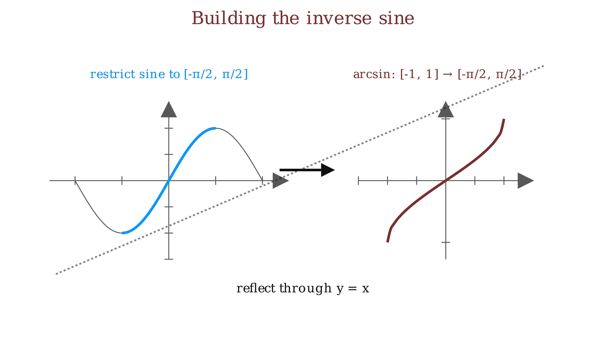
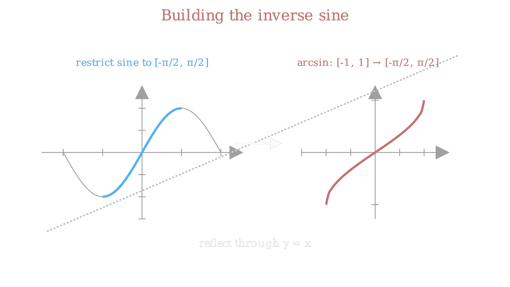
The three inverse functions. To make $\sin, \cos, \tan$ invertible, restrict each to a principal-value range:
| Inverse | Input domain | Output range |
|---|---|---|
| $\arcsin x$ | $[-1, 1]$ | $[-\pi/2, \pi/2]$ |
| $\arccos x$ | $[-1, 1]$ | $[0, \pi]$ |
| $\arctan x$ | $\mathbb{R}$ | $(-\pi/2, \pi/2)$ |
三个反函数。为使 $\sin, \cos, \tan$ 可逆，各限定一段主值域：
| 反函数 | 定义域 | 值域 |
|---|---|---|
| $\arcsin x$ | $[-1, 1]$ | $[-\pi/2, \pi/2]$ |
| $\arccos x$ | $[-1, 1]$ | $[0, \pi]$ |
| $\arctan x$ | $\mathbb{R}$ | $(-\pi/2, \pi/2)$ |
Worked Example B4.5: reciprocal valueB4.5 例题：倒数函数值
Find the exact value of $\sec(\pi/3)$, $\csc(\pi/4)$, and $\cot(\pi/6)$.求 $\sec(\pi/3)$、$\csc(\pi/4)$、$\cot(\pi/6)$ 的精确值。
Apply the definitions.
套用定义。
$$ \sec(\pi/3) \;=\; \frac{1}{\cos(\pi/3)} \;=\; \frac{1}{1/2} \;=\; 2. $$ $$ \csc(\pi/4) \;=\; \frac{1}{\sin(\pi/4)} \;=\; \frac{1}{\sqrt{2}/2} \;=\; \sqrt{2}. $$ $$ \cot(\pi/6) \;=\; \frac{\cos(\pi/6)}{\sin(\pi/6)} \;=\; \frac{\sqrt{3}/2}{1/2} \;=\; \sqrt{3}. $$Worked Example B4.5b: inverse value with rangeB4.5b 例题：反函数与值域
Find $\arcsin(-1/2)$ and $\arccos(-1/2)$ exactly.精确求 $\arcsin(-1/2)$ 与 $\arccos(-1/2)$。
$\arcsin(-1/2)$. The output must lie in $[-\pi/2, \pi/2]$. We know $\sin(\pi/6) = 1/2$, so $\sin(-\pi/6) = -1/2$. Hence $\arcsin(-1/2) = -\pi/6$.
$\arcsin(-1/2)$。输出必须落在 $[-\pi/2, \pi/2]$。已知 $\sin(\pi/6) = 1/2$，故 $\sin(-\pi/6) = -1/2$，从而 $\arcsin(-1/2) = -\pi/6$。
$\arccos(-1/2)$. The output must lie in $[0, \pi]$. We need the angle in $[0, \pi]$ whose cosine is $-1/2$. From CAST, $\cos$ is negative in Q2; reference angle $\pi/3$ gives the Q2 angle $\pi - \pi/3 = 2\pi/3$. Hence $\arccos(-1/2) = 2\pi/3$.
$\arccos(-1/2)$。输出必须落在 $[0, \pi]$。求 $[0, \pi]$ 内余弦为 $-1/2$ 的角。CAST 指出 $\cos$ 在 Q2 为负；参考角 $\pi/3$ 对应 Q2 角 $\pi - \pi/3 = 2\pi/3$。故 $\arccos(-1/2) = 2\pi/3$。
Worked Example B4.5c: composition of trig and inverse trigB4.5c 例题：三角函数与反三角函数复合
Find the exact value of $\sin(\arccos(3/5))$ without finding the angle itself.不求出角度本身，求 $\sin(\arccos(3/5))$ 的精确值。
Let $\theta = \arccos(3/5)$, so $\cos\theta = 3/5$ with $\theta \in [0,\pi]$. Build a right triangle: adjacent $=3$, hypotenuse $=5$, so opposite $=\sqrt{5^2-3^2}=4$.
设 $\theta = \arccos(3/5)$，则 $\cos\theta = 3/5$，$\theta \in [0,\pi]$。构造直角三角形：邻边 $=3$、斜边 $=5$，对边 $=\sqrt{5^2-3^2}=4$。
Since $\arccos$ outputs $[0,\pi]$, $\sin\theta \ge 0$ there, so there is no sign ambiguity.
因 $\arccos$ 输出 $[0,\pi]$，该区间内 $\sin\theta \ge 0$，所以没有符号歧义。
$$ \sin(\arccos(3/5)) = \sin\theta = \frac{4}{5}. $$This "triangle trick" avoids ever computing the angle numerically, and is the standard method for any $\sin(\arccos(\cdot))$, $\tan(\arcsin(\cdot))$, etc. composition.
这个"三角形技巧"完全避免了数值计算角度本身，是处理任何 $\sin(\arccos(\cdot))$、$\tan(\arcsin(\cdot))$ 等复合的标准方法。
An inverse trigonometric value outside its principal range is wrong even when its sine, cosine or tangent matches: $\arcsin$ gives values in $[-\frac{\pi}{2}, \frac{\pi}{2}]$, $\arctan$ in $(-\frac{\pi}{2}, \frac{\pi}{2})$ and $\arccos$ in $[0, \pi]$. In an equation with $\sec x$ or $\csc x$, rewrite it with $\cos x$ or $\sin x$ (or with $1 + \tan^{2}x = \sec^{2}x$) first, and reject any value that is impossible, such as $\sec x = -\frac{1}{2}$, since $|\sec x| \ge 1$. In a composition like $\tan(\arcsin x)$, draw the right triangle and take the sign from the range of the inner function.
反三角函数值若不在主值范围内，即使其正弦、余弦或正切相符也是错的：$\arcsin$ 取值于 $[-\frac{\pi}{2}, \frac{\pi}{2}]$，$\arctan$ 取值于 $(-\frac{\pi}{2}, \frac{\pi}{2})$，$\arccos$ 取值于 $[0, \pi]$。含 $\sec x$ 或 $\csc x$ 的方程，先用 $\cos x$、$\sin x$（或 $1 + \tan^{2}x = \sec^{2}x$）改写，并舍去不可能的值，例如 $\sec x = -\frac{1}{2}$，因为 $|\sec x| \ge 1$。处理 $\tan(\arcsin x)$ 这类复合时，画出直角三角形，并按内层函数的值域定符号。
1. Find the exact values of $\csc\frac{5\pi}{6}$ and $\sec\frac{3\pi}{4}$.1. 求 $\csc\frac{5\pi}{6}$ 与 $\sec\frac{3\pi}{4}$ 的精确值。
$\sin\frac{5\pi}{6} = \frac{1}{2}$, so $\csc\frac{5\pi}{6} = 2$. $\cos\frac{3\pi}{4} = -\frac{\sqrt{2}}{2}$ (Q2, reference angle $\frac{\pi}{4}$), so $\sec\frac{3\pi}{4} = -\frac{2}{\sqrt{2}} = -\sqrt{2}$.
$\sin\frac{5\pi}{6} = \frac{1}{2}$，故 $\csc\frac{5\pi}{6} = 2$。$\cos\frac{3\pi}{4} = -\frac{\sqrt{2}}{2}$（Q2，参考角 $\frac{\pi}{4}$），故 $\sec\frac{3\pi}{4} = -\frac{2}{\sqrt{2}} = -\sqrt{2}$。
2. Find the exact value of $\tan\bigl(\arcsin\frac{3}{5}\bigr)$.2. 求 $\tan\bigl(\arcsin\frac{3}{5}\bigr)$ 的精确值。
Let $\theta = \arcsin\frac{3}{5}$, so $\sin\theta = \frac{3}{5}$ and $\theta$ lies in $[-\frac{\pi}{2}, \frac{\pi}{2}]$. Since $\sin\theta > 0$, $\theta$ is acute. A right triangle with opposite $3$ and hypotenuse $5$ has adjacent side $\sqrt{25 - 9} = 4$, so $\tan\theta = \frac{3}{4}$.
设 $\theta = \arcsin\frac{3}{5}$，则 $\sin\theta = \frac{3}{5}$，且 $\theta$ 在 $[-\frac{\pi}{2}, \frac{\pi}{2}]$ 内。因 $\sin\theta > 0$，$\theta$ 为锐角。对边 $3$、斜边 $5$ 的直角三角形邻边为 $\sqrt{25 - 9} = 4$，故 $\tan\theta = \frac{3}{4}$。
3. Explain why $\arccos\bigl(\cos\frac{5\pi}{3}\bigr) \ne \frac{5\pi}{3}$, and find its value.3. 解释为什么 $\arccos\bigl(\cos\frac{5\pi}{3}\bigr) \ne \frac{5\pi}{3}$，并求其值。
The output of $\arccos$ lies in $[0, \pi]$, and $\frac{5\pi}{3}$ is outside that range. Evaluate the inside first: $\cos\frac{5\pi}{3} = \frac{1}{2}$ (Q4, reference angle $\frac{\pi}{3}$). Then $\arccos\frac{1}{2} = \frac{\pi}{3}$.
$\arccos$ 的输出在 $[0, \pi]$ 内，而 $\frac{5\pi}{3}$ 不在此范围。先算内层：$\cos\frac{5\pi}{3} = \frac{1}{2}$（Q4，参考角 $\frac{\pi}{3}$）。再得 $\arccos\frac{1}{2} = \frac{\pi}{3}$。
4. Solve $2\tan^{2}x = 3\sec x$ for $0 \le x < 2\pi$.4. 在 $0 \le x < 2\pi$ 上解 $2\tan^{2}x = 3\sec x$。
Replace $\tan^{2}x$ by $\sec^{2}x - 1$: $2\sec^{2}x - 3\sec x - 2 = 0$, so $(2\sec x + 1)(\sec x - 2) = 0$. The value $\sec x = -\frac{1}{2}$ is impossible because $|\sec x| \ge 1$. So $\sec x = 2$, that is $\cos x = \frac{1}{2}$, giving $x = \frac{\pi}{3}$ or $x = \frac{5\pi}{3}$.
把 $\tan^{2}x$ 换成 $\sec^{2}x - 1$：$2\sec^{2}x - 3\sec x - 2 = 0$，即 $(2\sec x + 1)(\sec x - 2) = 0$。$\sec x = -\frac{1}{2}$ 不可能，因为 $|\sec x| \ge 1$。故 $\sec x = 2$，即 $\cos x = \frac{1}{2}$，得 $x = \frac{\pi}{3}$ 或 $x = \frac{5\pi}{3}$。
Compound-Angle Identities and Trig Symmetries复角恒等式与三角对称性 HL AHL 3.10 · 3.11
- State the compound-angle formulas for $\sin(A \pm B)$, $\cos(A \pm B)$ and $\tan(A \pm B)$.
- Calculate exact values such as $\sin 75^\circ$ or $\cos\frac{\pi}{12}$ by writing the angle as a sum or difference of standard angles.
- Deduce the double-angle formulas as the case $A = B$.
- State the symmetry properties $\sin(-x) = -\sin x$, $\cos(-x) = \cos x$ and $\tan(-x) = -\tan x$ and relate them to the graphs.
- Prove identities such as $\sin(x + \pi) = -\sin x$ and $\cos\bigl(\frac{\pi}{2} - x\bigr) = \sin x$ with the compound-angle formulas.
- 写出（
state）$\sin(A \pm B)$、$\cos(A \pm B)$、$\tan(A \pm B)$ 的复角公式（compound-angle formulas）。 - 把角写成标准角的和或差，计算（
calculate）$\sin 75^\circ$、$\cos\frac{\pi}{12}$ 等精确值。 - 令 $A = B$，推导（
deduce）倍角公式。 - 写出对称性质 $\sin(-x) = -\sin x$、$\cos(-x) = \cos x$、$\tan(-x) = -\tan x$，并与图像联系。
- 用复角公式证明（
prove）$\sin(x + \pi) = -\sin x$、$\cos\bigl(\frac{\pi}{2} - x\bigr) = \sin x$ 等恒等式。
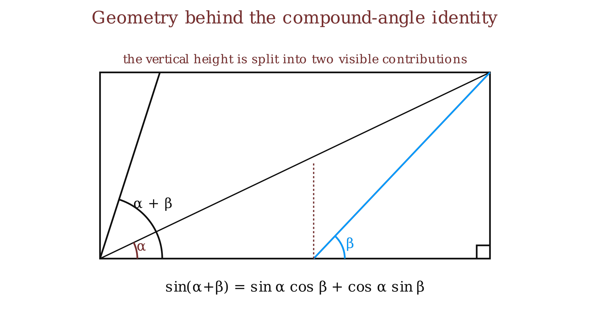
Symmetry identities. Sine and tangent are odd functions; cosine is even: $$ \sin(-x) \;=\; -\sin x, \qquad \cos(-x) \;=\; \cos x, \qquad \tan(-x) \;=\; -\tan x. $$ These follow directly from the unit-circle definition: replacing $x$ by $-x$ reflects the point $P$ across the $x$-axis, which negates its $y$-coordinate while leaving the $x$-coordinate fixed.
对称性恒等式。正弦与正切为奇函数，余弦为偶函数： $$ \sin(-x) \;=\; -\sin x, \qquad \cos(-x) \;=\; \cos x, \qquad \tan(-x) \;=\; -\tan x. $$ 这直接由单位圆定义得到：把 $x$ 换为 $-x$ 相当于把点 $P$ 关于 $x$ 轴反射，$y$ 坐标变号、$x$ 坐标不变。
Worked Example B4.6: exact value via compound angleB4.6 例题：用复角公式求精确值
Find the exact value of $\sin(75^\circ)$ by writing $75^\circ = 45^\circ + 30^\circ$.把 $75^\circ$ 写成 $45^\circ + 30^\circ$，求 $\sin(75^\circ)$ 的精确值。
Apply the addition formula.
套用加法公式。
$$ \sin(75^\circ) \;=\; \sin(45^\circ + 30^\circ) \;=\; \sin 45^\circ \cos 30^\circ + \cos 45^\circ \sin 30^\circ. $$Substitute exact values. $\sin 45^\circ = \cos 45^\circ = \sqrt{2}/2$, $\sin 30^\circ = 1/2$, $\cos 30^\circ = \sqrt{3}/2$.
代入精确值。$\sin 45^\circ = \cos 45^\circ = \sqrt{2}/2$、$\sin 30^\circ = 1/2$、$\cos 30^\circ = \sqrt{3}/2$。
$$ \sin(75^\circ) \;=\; \frac{\sqrt{2}}{2} \cdot \frac{\sqrt{3}}{2} + \frac{\sqrt{2}}{2} \cdot \frac{1}{2} \;=\; \frac{\sqrt{6}}{4} + \frac{\sqrt{2}}{4} \;=\; \frac{\sqrt{6} + \sqrt{2}}{4}. $$Going deeper: double-angle from compound-angle进阶：由复角推导倍角
Set $A = B = x$ in the compound-angle formulas. From $\sin(A + B) = \sin A \cos B + \cos A \sin B$,
在复角公式中令 $A = B = x$。由 $\sin(A + B) = \sin A \cos B + \cos A \sin B$，
$$ \sin 2x \;=\; \sin x \cos x + \cos x \sin x \;=\; 2 \sin x \cos x. $$From $\cos(A + B) = \cos A \cos B - \sin A \sin B$,
由 $\cos(A + B) = \cos A \cos B - \sin A \sin B$，
$$ \cos 2x \;=\; \cos^{2} x - \sin^{2} x. $$The other two forms of $\cos 2x$ ($2 \cos^{2} x - 1$ and $1 - 2 \sin^{2} x$) follow by substituting $\sin^{2} x = 1 - \cos^{2} x$ or $\cos^{2} x = 1 - \sin^{2} x$ respectively. The compound-angle formulas are therefore the parent results from which the double-angle formulas descend.
$\cos 2x$ 的另两种形式（$2 \cos^{2} x - 1$ 与 $1 - 2 \sin^{2} x$）分别由代入 $\sin^{2} x = 1 - \cos^{2} x$ 或 $\cos^{2} x = 1 - \sin^{2} x$ 得到。故复角公式是倍角公式之母。
Worked Example B4.6b: prove an identity using symmetriesB4.6b 例题：用对称性证明恒等式
Show that $\sin(x + \pi) = -\sin x$ using the compound-angle formula.用复角公式证明 $\sin(x + \pi) = -\sin x$。
Expand with $A=x$, $B=\pi$.
以 $A=x$、$B=\pi$ 展开。
$$ \sin(x+\pi) = \sin x \cos\pi + \cos x \sin\pi = \sin x \cdot(-1) + \cos x \cdot 0 = -\sin x. $$This is why a horizontal shift of half a period ($\pi$) turns the sine graph upside down. The algebra agrees with the picture of sliding the curve along by half a cycle.
这正是水平平移半个周期（$\pi$）会把正弦图像上下翻转的原因。代数结果与"把曲线平移半个周期"的图像直觉一致。
Write the expansion in full before you substitute values, and watch the sign: $\cos(A + B) = \cos A\cos B - \sin A\sin B$ has a minus sign. Simplify an exact answer to a single fraction, such as $\frac{\sqrt{6} - \sqrt{2}}{4}$, and compare it with a rough value ($\cos 75^\circ \approx 0.26$) to catch a sign error. In a proof, name the identity you use on each line and keep the two sides apart until they meet.
代入数值之前先完整写出展开式，并注意符号：$\cos(A + B) = \cos A\cos B - \sin A\sin B$ 中间是减号。精确答案化简为单个分式，如 $\frac{\sqrt{6} - \sqrt{2}}{4}$，再与近似值（$\cos 75^\circ \approx 0.26$）比较，以发现符号错误。证明（prove）时每一行注明所用恒等式，两边分开推导直到相等。
1. Find the exact value of $\cos\frac{\pi}{12}$.1. 求 $\cos\frac{\pi}{12}$ 的精确值。
Write $\frac{\pi}{12} = \frac{\pi}{3} - \frac{\pi}{4}$. Then $\cos\frac{\pi}{12} = \cos\frac{\pi}{3}\cos\frac{\pi}{4} + \sin\frac{\pi}{3}\sin\frac{\pi}{4} = \frac{1}{2} \cdot \frac{\sqrt{2}}{2} + \frac{\sqrt{3}}{2} \cdot \frac{\sqrt{2}}{2} = \frac{\sqrt{2} + \sqrt{6}}{4}$.
写 $\frac{\pi}{12} = \frac{\pi}{3} - \frac{\pi}{4}$。则 $\cos\frac{\pi}{12} = \cos\frac{\pi}{3}\cos\frac{\pi}{4} + \sin\frac{\pi}{3}\sin\frac{\pi}{4} = \frac{1}{2} \cdot \frac{\sqrt{2}}{2} + \frac{\sqrt{3}}{2} \cdot \frac{\sqrt{2}}{2} = \frac{\sqrt{2} + \sqrt{6}}{4}$。
2. Show that $\cos\bigl(\frac{\pi}{2} - x\bigr) = \sin x$.2. 证明 $\cos\bigl(\frac{\pi}{2} - x\bigr) = \sin x$。
Expand: $\cos\bigl(\frac{\pi}{2} - x\bigr) = \cos\frac{\pi}{2}\cos x + \sin\frac{\pi}{2}\sin x = 0 \cdot \cos x + 1 \cdot \sin x = \sin x$. This is the complementary-angle (co-function) relationship: the cosine of an angle equals the sine of its complement.
展开：$\cos\bigl(\frac{\pi}{2} - x\bigr) = \cos\frac{\pi}{2}\cos x + \sin\frac{\pi}{2}\sin x = 0 \cdot \cos x + 1 \cdot \sin x = \sin x$。这就是余角关系（co-function）：一个角的余弦等于其余角的正弦。
3. Given $\tan A = \frac{1}{2}$ and $\tan B = \frac{1}{3}$ with $A$ and $B$ acute, find $\tan(A + B)$ and hence $A + B$.3. 已知 $\tan A = \frac{1}{2}$、$\tan B = \frac{1}{3}$，$A$ 与 $B$ 均为锐角，求 $\tan(A + B)$，并由此求 $A + B$。
$\tan(A + B) = \frac{\frac{1}{2} + \frac{1}{3}}{1 - \frac{1}{2} \cdot \frac{1}{3}} = \frac{\frac{5}{6}}{\frac{5}{6}} = 1$. Both tangents are less than $1$, so $A$ and $B$ are each less than $\frac{\pi}{4}$ and $0 < A + B < \frac{\pi}{2}$. The only angle there with tangent $1$ is $\frac{\pi}{4}$, so $A + B = \frac{\pi}{4}$.
$\tan(A + B) = \frac{\frac{1}{2} + \frac{1}{3}}{1 - \frac{1}{2} \cdot \frac{1}{3}} = \frac{\frac{5}{6}}{\frac{5}{6}} = 1$。两个正切都小于 $1$，故 $A$、$B$ 都小于 $\frac{\pi}{4}$，$0 < A + B < \frac{\pi}{2}$。该范围内正切为 $1$ 的角只有 $\frac{\pi}{4}$，故 $A + B = \frac{\pi}{4}$。
4. Use a symmetry property to explain why the graph of $y = \cos x$ is symmetric about the $y$-axis.4. 用对称性质解释为什么 $y = \cos x$ 的图像关于 $y$ 轴对称。
Since $\cos(-x) = \cos x$, whenever $(x, y)$ is on the graph, so is $(-x, y)$: the point reflected in the $y$-axis. Cosine is an even function. By contrast $\sin(-x) = -\sin x$, so the sine graph has rotational symmetry of order $2$ about the origin.
由 $\cos(-x) = \cos x$，只要 $(x, y)$ 在图像上，它关于 $y$ 轴的对称点 $(-x, y)$ 也在图像上。余弦是偶函数。相反，$\sin(-x) = -\sin x$，所以正弦图像关于原点成 $2$ 阶旋转对称。
Exam Strategy and Common Pitfalls考试策略与常见陷阱
- Sketch the unit circle. A quick freehand sketch with the angle marked saves time on quadrant identification.
- 画单位圆草图。手绘标注角位置可加快判别象限。
- Decompose by reference angle. Read the magnitude from the first-quadrant table, then attach the CAST sign for the target quadrant.
- 按参考角分解。从第一象限表读模长，再用 CAST 给目标象限符号。
- Convert to a single function before solving. If an equation mixes $\sin x$ and $\cos x$, replace using $\sin^{2} x + \cos^{2} x = 1$ or a double-angle identity to leave a polynomial in one trig function.
- 解前化为单一函数。若方程中 $\sin x$ 与 $\cos x$ 并存，用 $\sin^{2} x + \cos^{2} x = 1$ 或倍角恒等式替换，化为单个三角函数的多项式。
- Answer on the stated interval. Give the explicit solutions on the stated interval; write a general formula only when the question asks for one.
- 按指定区间作答。给出指定区间上的明确解；只有题目要求时才写通解公式。
- Both solutions per cycle. For $-1 < c < 1$, $\sin x = c$ gives two solutions per $2\pi$ and $\cos x = c$ gives two per $2\pi$; $\tan x = c$ gives one per $\pi$. Check for the second sine or cosine solution before you move on.
- 每周期两解。当 $-1 < c < 1$ 时，$\sin x = c$ 每 $2\pi$ 内两解，$\cos x = c$ 每 $2\pi$ 内两解；$\tan x = c$ 每 $\pi$ 内一解。继续之前，先检查是否漏了正弦或余弦的第二个解。
- Inverse functions return one value, not all. Use the principal range to fix the output; for the other solutions of $\sin x = c$ or $\cos x = c$, use the standard pairs from B4.4.
- 反函数返回单值，并非全部解。用主值域确定输出；对 $\sin x = c$ 或 $\cos x = c$ 的其他解，沿用 B4.4 的标准配对。
- Know the compound-angle formulas well. The six identities (three pairs) give the double-angle formulas as the case $A = B$, and they turn angles such as $75^\circ$ into sums of standard angles.
- 熟练掌握复角公式。六条恒等式（三对）在 $A = B$ 时给出倍角公式，也能把 $75^\circ$ 这类角化为标准角之和。
- Work by hand and with technology. Paper 1 is taken without technology, so practise exact values, identities and equations by hand. Paper 2 requires technology, so also practise solving a trigonometric equation by graphing both sides and reading the intersections inside the stated interval.
- 手算与技术工具都要练。Paper 1 不允许使用技术工具，所以精确值、恒等式与方程要会手算。Paper 2 必须使用技术工具，所以也要练习把方程两边分别作图，并在指定区间内读取交点来解三角方程。
- Use the double-angle formulas as tools. In an equation that mixes $\sin 2x$ with $\sin x$ or $\cos x$, expand $\sin 2x = 2\sin x\cos x$ and factorise, as in check question 4 of B4.4.
- 把倍角公式当作工具。方程中 $\sin 2x$ 与 $\sin x$ 或 $\cos x$ 并存时，展开 $\sin 2x = 2\sin x\cos x$ 再因式分解，如 B4.4 自我检测第 4 题。
Flashcards闪卡
Unit B4 Practice Quiz单元 B4 练习测验
Readiness Checklist备考清单
Tick each item when you can do it cold, without notes, on your first attempt.
每一条都要"裸做"做对（不看笔记、一次过）才打勾。
- State the unit-circle definition of $\sin \theta, \cos \theta$, and $\tan \theta$ for any real $\theta$写出任意实数 $\theta$ 下 $\sin \theta, \cos \theta, \tan \theta$ 的单位圆定义
- Recall all first-quadrant exact values at $0, \pi/6, \pi/4, \pi/3, \pi/2$默写 $0, \pi/6, \pi/4, \pi/3, \pi/2$ 处的第一象限精确值
- Apply the CAST sign rule to compute exact values in Q2, Q3, Q4用 CAST 符号规则在 Q2、Q3、Q4 求精确值
- (HL) Derive $1 + \tan^{2} x = \sec^{2} x$ and $1 + \cot^{2} x = \csc^{2} x$ from $\sin^{2} x + \cos^{2} x = 1$（HL）由 $\sin^{2} x + \cos^{2} x = 1$ 推导 $1 + \tan^{2} x = \sec^{2} x$ 与 $1 + \cot^{2} x = \csc^{2} x$
- State all three forms of $\cos 2x$ and choose the convenient form for a given problem写出 $\cos 2x$ 的三种形式，并按题目选用最合适的
- Identify amplitude, period, phase shift, and vertical shift of $y = a \sin(b(x - c)) + d$辨识 $y = a \sin(b(x - c)) + d$ 的振幅、周期、相移、纵移
- Sketch one cycle of $\tan x$, marking the asymptotes at $x = \pi/2 + k\pi$画出 $\tan x$ 的一个周期，并标注 $x = \pi/2 + k\pi$ 处的渐近线
- Solve $\sin x = c$, $\cos x = c$, $\tan x = c$ on $[0, 2\pi]$ using principal solutions用主值在 $[0, 2\pi]$ 解 $\sin x = c$、$\cos x = c$、$\tan x = c$
- Solve quadratic-style trig equations by substitution $u = \sin x$ or $u = \cos x$用 $u = \sin x$ 或 $u = \cos x$ 代换求解二次型三角方程
- (HL) Define $\sec, \csc, \cot$ and find exact values at standard angles（HL）定义 $\sec, \csc, \cot$ 并求标准角处的精确值
- (HL) State the principal ranges of $\arcsin, \arccos, \arctan$ and use them to evaluate exact inverses（HL）写出 $\arcsin, \arccos, \arctan$ 的主值域并用以求精确反函数值
- (HL) Recall $\sin(A \pm B)$, $\cos(A \pm B)$, $\tan(A \pm B)$ from memory（HL）默写 $\sin(A \pm B)$、$\cos(A \pm B)$、$\tan(A \pm B)$
- (HL) Use the symmetry identities $\sin(-x) = -\sin x$, $\cos(-x) = \cos x$, $\tan(-x) = -\tan x$ to simplify expressions（HL）用对称恒等式 $\sin(-x) = -\sin x$、$\cos(-x) = \cos x$、$\tan(-x) = -\tan x$ 化简表达式
IB Paper-Style PracticeIB 试卷风格练习
B4 Practice and Solutions are on the roadmap. They will ship under Practice Questions/Unit_B4_*.html with the bilingual built-in pattern.
B4 配套的 Practice 与 Solutions 已在排期，上线后位于 Practice Questions/Unit_B4_*.html，采用双语内嵌格式。
How to use this guide本指南使用说明
How to use this guide本指南使用说明
Trigonometry rewards the student who knows the unit circle well. Learn the first-quadrant exact values and the CAST sign rule, and most exact-value questions reduce to three moves: quadrant, reference angle, sign. Each section opens with learning objectives and a cheat sheet; the worked examples apply the moves to exam-style problems; the Going deeper blocks explain where the results come from; the check questions at the end of each section test you.三角学偏爱把单位圆记牢的学生。掌握第一象限精确值与 CAST 符号规则后，多数精确值题都归结为三步：象限、参考角、符号。每节先给学习目标与速查框；例题把这些步骤用于考试风格的题目；进阶块解释结论的来源；每节末尾的自我检测用来检验掌握程度。
Memorise the first-quadrant exact values: $\sin 30^\circ = 1/2$, $\sin 45^\circ = \sqrt{2}/2$, $\sin 60^\circ = \sqrt{3}/2$. Memorise the identity $\sin^2 x + \cos^2 x = 1$ and the double-angle formulas. Practise solving $\sin x = c$ on $[0, 2\pi]$ end to end.
背熟第一象限精确值：$\sin 30^\circ = 1/2$、$\sin 45^\circ = \sqrt{2}/2$、$\sin 60^\circ = \sqrt{3}/2$。背熟恒等式 $\sin^2 x + \cos^2 x = 1$ 与倍角公式。完整做一道 $[0, 2\pi]$ 上解 $\sin x = c$ 的题。
Derive the three forms of $\cos 2x$ from $\cos 2x = \cos^2 x - \sin^2 x$ and $\sin^2 x + \cos^2 x = 1$. Solve equations with a multiple angle, such as $\cos 2x = \frac{1}{2}$ on $[0, 2\pi]$, by first changing the interval for $2x$. Write a sine or cosine model from a graph or a description, and check it at one known point.
由 $\cos 2x = \cos^2 x - \sin^2 x$ 与 $\sin^2 x + \cos^2 x = 1$ 推导 $\cos 2x$ 的三种形式。解 $[0, 2\pi]$ 上 $\cos 2x = \frac{1}{2}$ 这类含倍角的方程时，先变换 $2x$ 的区间。由图像或文字描述写出正弦或余弦模型，并代入一个已知点检验。
Derive the three forms of $\cos 2x$ from $\sin^2 x + \cos^2 x = 1$. Master the compound-angle expansions of $\sin(A \pm B)$, $\cos(A \pm B)$, $\tan(A \pm B)$, and use them to deduce the double-angle formulas as the $A = B$ case. Solve trig equations involving reciprocal and inverse functions cleanly, stating ranges where required.
由 $\sin^2 x + \cos^2 x = 1$ 推导 $\cos 2x$ 的三种形式。熟练 $\sin(A \pm B)$、$\cos(A \pm B)$、$\tan(A \pm B)$ 的复角展开，并把 $A = B$ 作为倍角公式的特例。求解含倒数与反三角函数的方程，必要时写明值域。